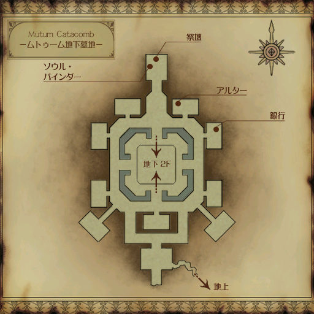

アイテムトレジャー マップ < ムトゥーム地下墓地 S >
ムトゥーム地下墓地の図が描かれた 宝の地図
[用途] 該当地域で USE する
※ 解読スキル値が足りない場合は 使用することが出来ません
[用途] 該当地域で USE する
※ 解読スキル値が足りない場合は 使用することが出来ません
Treasure Map Catacomb 13
アイテム情報
- 使用可能回数
- 1
- 重さ
- 0.01
- ペットアイテム
- 紙 (3.3)
詳細
- 分類
- 文献
- 基本価格
- 200
- スタック
- 不可
- 用途
- 該当地域で USE する ※ 解読スキル値が足りない場合は 使用することが出来ません
宝探し
古びた地図 <073> を解読して作る。使う場所：ムトゥーム地下墓地。必要な解読スキル：95。
- 使うと出る：Excavate Point（Lv 90〜100） ×1
- Excavate Point（Lv 90〜100） を壊すと出る：トレジャー ガーディアン（Lv 200） ×1、Treasure Box（Lv 90〜100） ×1

Treasure Box の中身（Lv 90〜100）
| アイテム | 確率 | 個数 |
|---|---|---|
| ディバイン ブレイド | 15% | 1 |
| 光槍ブリューナク | 15% | 1 |
| 魔槍ゲイボルグ | 15% | 1 |
| 神殺しの大剣 | 7% | 1 |
| 神殺しの槍 | 7% | 1 |
| 神殺しの杖 | 7% | 1 |
| 神殺しの弓 | 7% | 1 |
| 神殺しの銃 | 7% | 1 |
| ビッグ ジュエルステッキ | 5% | 1 |
| ノアフォース ボウ | 5% | 1 |
| ケリュケイオンの杖 | 5% | 1 |
| シールド オブ マナ | 5% | 1 |
| トリケラトプス シールド | 5% | 1 |
| ビッグ スクロール | 40% | 1 |
| マジェスティ クラウン | 15% | 1 |
| 黄金のランプ | 8% | 1 |
| ドラゴンヘッド ショルダー | 5% | 1 |
| ケサランパサラン | 2% | 1 |
| 魔人のランプ | 1% | 1 |
| インセクト アンテナ | 10% | 1 |
| 複眼ゴーグル | 10% | 1 |
| ビッグ スパイダー リュック | 10% | 1 |
| 鉄仮面 | 10% | 1 |
| 頭襟 | 10% | 1 |
| 鳥くちばし | 10% | 1 |
| ドワーヴン ギア | 80% | 30 |
| テレポート ストーン < 城下町ビスク ビクトリアス広場 > | 20% | 30 |
| テレポート ストーン < エルビン渓谷 山麓の村 > | 16% | 25 |
| テレポート ストーン < スルト鉱山 火竜神殿 > | 16% | 25 |
| テレポート ストーン < ムトゥーム地下墓地 地下4階 > | 16% | 25 |
| テレポート ストーン < タルタロッサ・パレス > | 16% | 25 |
| テレポート ストーン < ビスク地下水路 > | 16% | 25 |
| エクスペリエンス パウダー | 100% | 100 |
| アメジスト | 9.71% | 30 |
| ガーネット | 9.71% | 30 |
| ダイアモンド | 9.71% | 30 |
| ムーンストーン | 9.71% | 30 |
| ホワイト パール | 8.74% | 30 |
| ブラック パール | 8.74% | 30 |
| エメラルド | 7.77% | 20 |
| アクアマリン | 7.77% | 30 |
| ルビー | 7.77% | 30 |
| サファイア | 7.77% | 30 |
| オパール | 7.77% | 30 |
| トパーズ | 4.85% | 30 |
| マナレコード [ BGM List : 5 ] | 5% | 1 |
| ミュージック チェンジャー | 5% | 1 |
トレジャー ガーディアン のドロップ（Lv 200）
| アイテム | 確率 | 個数 |
|---|---|---|
| エメラルド | 20% | 14 |
| アクアマリン | 20% | 14 |
| ルビー | 20% | 14 |
| サファイア | 20% | 14 |
| アメジスト | 10% | 14 |
| ガーネット | 5% | 14 |
| ダイアモンド | 5% | 14 |
| 古びた地図 <137> | 0.2% | 1 |
| 古びた地図 <139> | 0.2% | 1 |
| 古びた地図 <138> | 0.2% | 1 |
| 古びた地図 <140> | 0.2% | 1 |
| 古びた地図 <123> | 0.1% | 1 |
| 古びた地図 <141> | 0.1% | 1 |
| 古びた地図 <142> | 0.1% | 1 |
| 古びた地図 <143> | 0.1% | 1 |
| 古びた地図 <144> | 0.1% | 1 |
| 古びた地図 <145> | 0.1% | 1 |
| 古びた地図 <146> | 0.1% | 1 |
| 古びた地図 <147> | 0.1% | 1 |
確率と個数は、最低レベル〜最高レベルのときの値。宝探しのしくみは 宝探し。
作り方（レシピ）
| レシピ | 個数 | 必要スキル | 材料 | 生産設備 | 生産道具 |
|---|---|---|---|---|---|
| トレジャー マップ < ムトゥーム地下墓地 S > | 1 | 解読 95 | 古びた地図 <073> ×1、ヴェラム スクロール ×3、インク ×1 | 作業机で「地図作成」 | 初心者用ペン、筆記師 ペン、贋作師 ペン ほか 13 品 |